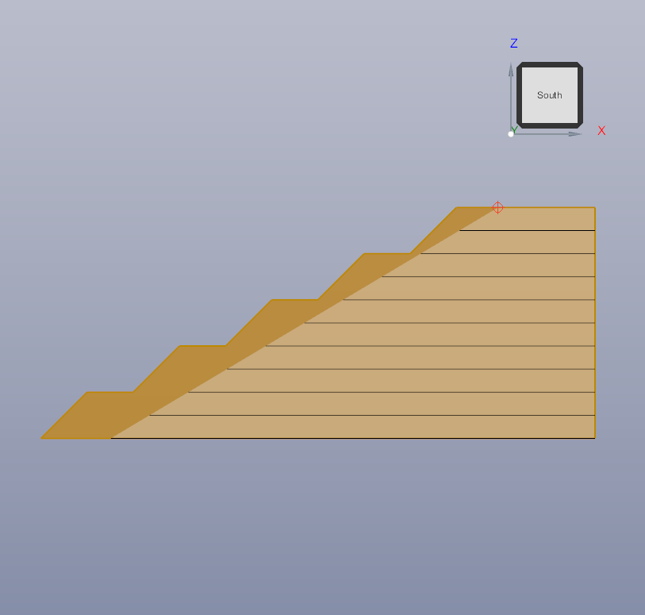
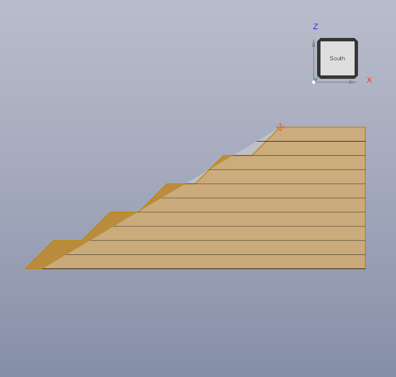

To prevent the slope from intersecting open space (“thin air”) based on the initial maximum overall slope angle,
place the crest point further inland so the generated slope remains within the ground surface.
Correct crest position
Correct

Crest is positioned sufficiently inland; the slope face and toe remain within the modeled terrain.
Incorrect crest position
Incorrect

Crest is too close to the edge; part of the slope projects into open space (“thin air”).
Tip: If possible, convert BMP images to PNG for smaller files and better browser compatibility.
Only the src paths need updating if you provide PNGs.